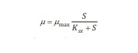

Microbreweries
Although the term "microbrewery" was originally used in relation to the size of breweries, it gradually came to reflect an alternative attitude and approach to brewing flexibility, adaptability, experimentation and customer service. The term and trend spread to the US in the 1980s and was eventually used as a designation of breweries that produce fewer than 15,000 U.S. beer barrels (1,800,000 liters; 460,000 U.S. gallons) annually.
Microbreweries gradually appeared in other countries, such as New Zealand and Australia. Craft beer and microbreweries were cited as the reason for a 15 million L (4.0 million US gal) drop in alcohol sales in New Zealand over 2012, with New Zealanders preferring higher-priced premium beers over cheaper brands.
Nanobreweries
The website The Food Section defines a "nanobrewery" as "a scaled-down microbrewery, often run by a solo entrepreneur, that produces beer in small batches." The US Department of the Treasury defines nanobreweries as "very small brewery operations" that produce beer for sale.
Craft Brewery
"Craft brewing" is a more encompassing term for developments in the industry succeeding the microbrewing movement of the late 20th century. The definition is not entirely consistent but typically applies to relatively small, independently owned commercial breweries that employ traditional brewing methods and emphasize flavor and quality. The term is usually reserved for breweries established since the 1970s but may be used for older breweries with a similar focus.
Canned Beer
The use of cans by craft brewers doubled between 2012 and 2014, with over 500 companies in the United States using cans to package their beverages. Previously associated with the major brewing corporations, cans are now favored by craft brewers for numerous reasons: cans are impervious to oxygen, beer-degrading light does not affect canned beer, canned beer is more portable since less room is required for storage or transportation, canned beer cools more quickly, and cans have a greater surface area for wraparound designs and decorations
The perception that bottles lead to a taste that is superior to canned beer is outdated, as most aluminum cans are lined with a polymer coating that protects the beer from the problematic metal. However, since drinking directly from a can may still result in a metallic taste, most craft brewers recommend pouring beer into a glass prior to consumption. In June 2014, the BA estimated 3% of craft beer is sold in cans, 60% is sold in bottles, and kegs represent the remainder of the market
Barrel Aged Beer
Goose Island first produced its Bourbon County Stout in 1992, but it wasn't regularly available until 2005. Other breweries began following Goose Island’s lead, typically aging rich imperial stouts such as Founders KBS and The Bruery's Black Tuesday. In 2018, Food and Drink wrote: "A process that was once niche has become not just mainstream, but ubiquitous." Barrel-aged sour beers are a newer trend, inspired by the Belgian tradition of lambics and Flanders red ale
Non-alcoholic craft beers
The market for non-alcoholic beer and wine in North America is predicted to quadruple from a base of about $20 million in 2018. Brooklyn Brewery are among the early craft breweries prepared to release a non-alcoholic craft beer, with their "Special Effects". Examples in Europe include Mikkeller's "Drink'in The Sun" and Nirvana's gluten-free "Kosmic Stout".
The most famous opening line in all of literature is: “In the beginning, God …” In writing about craft beer, a fitting opening line would be: “In the beginning, Fritz Maytag …” Maytag did not, ex nihilo, create a new malt beverage. In fact, Maytag’s brewing firm, the Anchor Steam Beer Company, had been in existence since 1896, well before he took ownership of the company in 1965. Maytag’s innovation was in reconstituting a fading company and a dying product. In the course of doing so, he personified “the beginning” of the craft beer segment of the malt beverage industry. Although Maytag’s pioneering endeavors took place in the United States, his influence on the market for beer has been global. Maytag and others who followed undermined the hypothesis that the U.S. beer industry was destined to have a highly concentrated market structure, a homogeneous output (i.e., lager beer), and be insulated from the prospect of new entrants to the market.
The term “craft beer” (or “craft beer segment”) is a portmanteau expression that merits unpacking. In his history of craft beer, Tom Acitelli defines a craft brewery this way:
of brewery includes any small, independently owned brewery that adheres to traditional brewing practices and ingredients. Craft brewers are distinct from larger regional and national breweries, which often use nontraditional ingredients and brew on a much vaster scale.
This definition incorporates the two variables that distinguish or define craft beer: the type of beer and the size of the production facility (although both metrics, “kind” and “size,” 4 are elastic). By type of beer, craft beer can mean different varieties of beer—ale, stout, porter, even lager—but never brewed with adjuncts or artificial ingredients. The trade group for craft brewers, the Brewers Association, defined a craft brewer as:
small, independent and traditional. Small means brewing less than 6 million barrels per year, the federal limit for the small brewers excise tax exemption. Independent means that less than 25% of the brewery is owned by a non-craft brewer. Traditional refers to a focus on beers that are made entirely or mostly from malt, and not diluted with adjuncts like corn or rice.
To many consumers, craft beer is associated with the small scale of the brewing facility: microbreweries and brewpubs.2 Home brewing is an extreme example of small-scale production and vertical integration. In the taxonomy of craft beer production, there also is the nanobrewery, which, unlike home brewers, brews beer for resale but on a very small scale.
Here, the overall craft-brewing process will be described. Note that this is a general process that can vary by producer and batch. The 4 main ingredients are water, barley/grains/cereals, hops, and yeast. Typically, utility water is filtered to purify it before use. If the source water is very soft, a brewer may add gypsum (calcium sulfate), Epsom salts (magnesium sulfate), calcium chloride, table salt (sodium chloride), and/or chalk (calcium carbonate). Magnesium, and particularly calcium, affect yeast metabolism, while bicarbonates alter pH.
The malted barley/grains are the source of starch for the sugar production, used in fermentation later. Malting refers to the process of allowing the cereals to germinate part way, then drying to stop the process. The purpose of this is to allow the enzymes that break down the endosperm starches to be released without much being consumed by the germination process. Typically, they soak in water for several days and are then drained, and dried. The cereal grain and sub varieties affect flavor, color, and aroma, as does the option of roasting, toasting, and/or smoking the grains. Adjuncts, non-germinated grains added separately, may also be added if additional starch is called for. It should be noted that most brewers buy malted-to-order barley due to the benefits of economics and required expertise coinciding with scale.
Hops release oils that provide some flavor and aroma, while inhibiting some spoiling bacteria.There is an incredibly wide variety of hops to choose from, and when they are added and for how long they are left to seep are all factors leveraged by recipes. The iconic bitterness from hops originates from the Alpha Acid resins, and International Bitterness Units (IBUs) is the standard used in calculations.
Yeast is the active culture that causes fermentation and is essential to the brew. They typically are in two categories: Top fermenting, which produces ale, and bottom fermenting, which produces lagers; top and bottom denotes whether the yeast floats or sinks. The yeast can be stored in dry form, which is easy to store and transport, or as a liquid, which enables a wider use of varieties and can obtain enhanced consistency. Cultures can be purchased (typically dried) or maintained in-house (though this is usually limited to larger brewers).
- Stages
- Mash
- Lautering and Sparging
- Boil Kettle: Wort Production
- Cooling Wort
- Fermentation
- Brite Tank
- Packaging
- Approach to Modeling & simulation
The first step in the brewing process is to produce the mash. The purpose of this step is to convert the starches in the grains into fermentable sugars. Beforehand, the kernels need to be crushed. Within limits, the finer they are broken, the more sugar can be obtained. However, if the grains are too small, water will not be able to permeate the grains, known as a stuck mash. Care must also be taken during processing to avoid a stuck run-off, which is when the water line is below the gain line, and the weight of the grains crush the bottom layer into an impermeable layer. These two “stuck” s are less of an issue if using a separate kettle for the mash. The grains are then put into a Mash-lauter-tun (or just a kettle) and soak in hot water, sprayed by the hydrator, to activate the various enzymes. The primary enzymes of interest are the Alpha and Beta Amylase enzymes, which work best at different temperature and pH ranges. Beta Amylase *-*(ideal range of 126-144F) is the heart of the process, as it snips segments of the starches into glucose. This process is greatly sped-up with the Alpha Amylase (ideal range of 149-153F), which cleaves the long starch segments, increasing the number of sites for the Beta enzyme to work. Limit dextrin’s are produced as a byproduct, which are starch segments with branching behavior enzymes cannot break down but are typically destroyed in the mashing process. Note that grain/sugar adjuncts may be added according to recipe. Early in the mash, an acid rest may be performed by lowering the water temp in order to lower pH, a step typically done if the water used is very soft with no additives to counter it, or if the water chemistry is unknown. 15-30 minutes in a protein rest is typically done by reducing the temperature to 113-131F, which allows the various protein chains to break down. The time and temperatures involved in this step, along with almost all others in the brewing process, depend on the recipe used. For the mash process, the time spent soaking is a spectrum starting with a full (high starch) brew with ultimately low alcohol with short time frame, to the inverse with a high soak time. The temperature behavior of the mash process can be broadly be categorized as follows: Infusion is where there is a single temperature is held. Decoction is where boiling water is added, and periodically some water and grist is removed, brought to boiling, and re added to keep temperature up. This technique was standard when good temperature measurement was beyond practical means. Temperature Control is where there are consecutive temperature increases, best used with under-modified malts.
Next is the Lautering and Sparging steps. The purpose is to remove the sugars from the grain husks and retrieve the sugar water. It should be noted that this step may or may not be in the mash-lauter-tun, if a kettle was used for the mash (typical of very small brewing operations, such as homebrew), then this step uses a lauter unit. The temperature is first raised to around 170F to stop enzyme activity. In the lautering step, the unit is drained, and the liquid is poured over the mash to extract more sugar, while the husks themselves act as a filter to remove larger particulates. The following sparging step has the sugar-water drained, while fresh heated water pours over the gains to extract even more sugar, suppress enzymes further, and to prevent a stuck run-off.
The sweet sugar water is then transferred to the Boil Kettle. The purpose is to condense the sugar water into wort and to kill off any unwanted bacteria. Typically, a steam jacketed brew kettle is used to boil approximately 90 minutes. During that time, some hops are added at various stages for different effects. Boiling hops are added early, where the extracted oils add bitterness. Oils that contribute to flavor and aroma are volatile and boil off easily, so flavor hops are usually added around the last 15-minute mark, while aroma hops are added in the last few. There may be an oxygen control system, so that the yeast my grow but is not competed with by other bacteria. The wort produced can be concentrated to become malt, which with the addition of water can be used to brew. In this stage, other adjuncts, primarily for flavor and aroma, may be added per recipe.
The next stage is separation and cooling, the purpose of which is to remove undesired solids and prepare for fermentation. The wort is vortexed in the kettle, where the hops/solids, called turb, collects in the center, and is left to slow to a stop and solids settle at the bottom (flocculation). The clean wort is then quickly cooled to a proper temperature for the yeast. Rapid cooling is essential for several reasons: prolonged idle time increases the chance of contamination, existing biological contamination will have more time to grow before yeast is Ambrose and Gomez 11 added, hot wort can produce dimethyl sulfides, and can react with oxygen to produce more off flavors, which both affect taste. The cooling is done often with a liquid-liquid heat exchanger, where the water used for cooling is used as pre-heated water for the next batch’s mash (around 170F). This cooling water is transferring from a “cold” liquor tank to a “hot” one, which are only regular tanks with no alcohol, despite the name.
Now alcohol production via fermentation can begin. Ideal time and temperature vary according to recipe; for example, Ales typically need 2 weeks at 68F, while lagers need 6 weeks at 48F. There are two stages to fermentation: the primary stage has exponential growth of yeast from the ample supply of simple sugars, and foaming (krausen) from rigorous CO2 production. In the secondary stage, heavy fats, proteins, and inactive yeast settle to the bottom of the tank, CO2 production slows dramatically, and yeast levels fall as only heavier, complex starches remain for consumption. Some brewers may have separate tanks for these two stages, though this is not typical. The CO2 production causes the beer to partially self-carbonate, which has the secondary effect of inhibiting contaminate growth. The alcohol content can indirectly be be measured by identifying its specific gravity with a hydrometer. Alcohol content is one attribute that may be used to determine the stop time. A refractometer can measure the alcohol content directly while also being easier to calibrate and uses very little product. However, it often has a prohibitive upfront cost. Once fermentation is completed, it is cooled, sometimes to near freezing, to help settle the yeast and undesired proteins. From there, the beer is slowly pumped out (to avoid disturbing the settled material) and possibly filtered. Craft brewers often abstain from filtering, believing the quality control/consistency is not worth the change in taste, expense, and maintenance. Because the fermentation process produces heat, some form of cooling is necessary. This is often in the form of jacketed vessels with flowing coolant, namely water or ethylene glycol. Fermenters have a cone shaped bottom to collect yeast and other particulates that sink. The vessels are also sealed with one-way valves that let CO2 escape while keeping oxygen and contaminates out, usually a water trap. The vessel needs to have extra space between the liquid level and vessel top (ullage) so that the foam (krausen) does not overflow. Furthermore, yeast may be recovered to start a new batch. Mutations limit the number of times this can be done to once or twice.
The beer can then enter the Brite Tank, which is a vessel to add in extra CO2. Usually, canistered CO2 is purchased separately, and the gas is broken into smaller bubbles by a device, such as a bubbling stone, to conserve gas and time.
The last step is to package the beer in cans, glasses, kegs, etc. Beyond ease of transportation, the containers keep out oxygen, sunlight, and stray contaminate that my alter the beer in shipment or storage. If the beer was not previously carbonated with the brite tank, it may be during the packaging process via priming, kraesening, or injection. Priming is when a water, sugar, and dry malt extract mixture is added to reactivate remaining yeast, producing some CO2. However, this comes with the risk of adding new flavors. Premade priming tablets can be purchased to be added to the bottles or batch and is usually used by homebrews rather than craft brew. Kraesening is where unfermented wort from earlier in the process (gyle) is added as it would in priming. This greatly reduces the chance of changing the taste, but the sugar content can vary, and the amount added should be adjusted accordingly. The last method is to simply inject pressurized CO2 while filling. The filling process for bottles, kegs, and cans are similar in procedure. The container is rinsed/disinfected, dried, flushed with CO2 to drive out air, partially pressurized with CO2 to suppress foaming, filled, and capped. Some systems may not pressurize CO2 and may opt to use a water jet to cause slight foaming, which helps push air out. In either case, the bottle is not filled to the brim, as some CO2 headspace helps keep the drink carbonated
Biomass comsumption Model
The biomass production rate as follows:
..and knowing parameters for monod's equation -half velocity constant and maximum specific growth rate of the microorganisms-:
"% MatLab differential equation solver syms X(t) miueqn = diff(X,t) == miu*X(t)cond = X(0) == K (if given boundary condition)ySol(t)=dsolve(eqn,cond)"- Elzinga, K; Tremblay, C; Tremblay, V, 2015. "Craft Beer in the United States: History, Numbers and Geography". Journal of Wine Economics.
- Wikipedia, the free encyclopedia, 2020. "Craft brewery and microbrewery". Wikipedia, the free encyclopedia.
- Ambrose M; Gomez M. "Design of a Standardized Brewery" A Major Qualifying Project Report Submitted to the Faculty of WORCESTER POLYTECHNIC INSTITUTE.
- Kostov,G, 2013. "Modeling of alcohol fermentation in brewing – comparative assessment of flavor profile of beers produced with free and immobilized cells" ResearchGate.